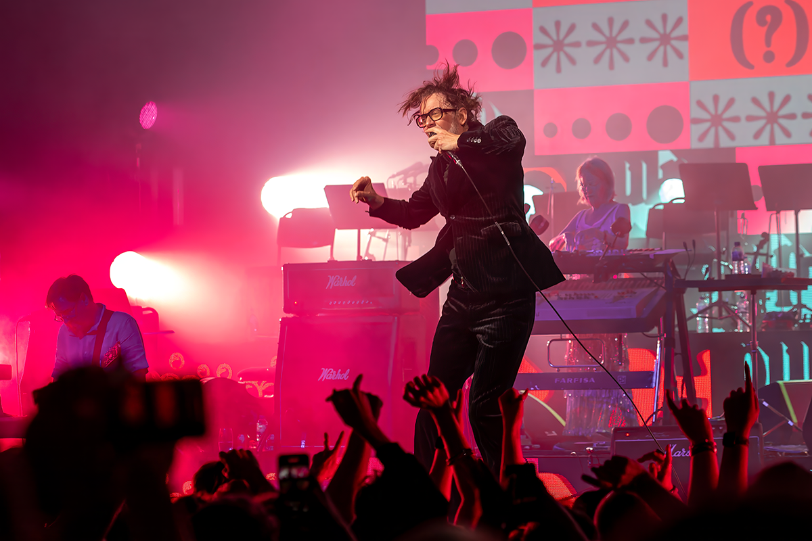
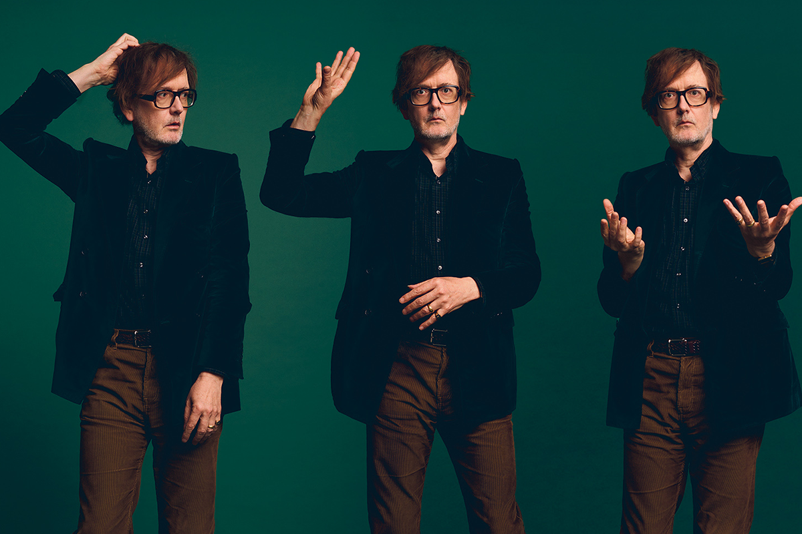
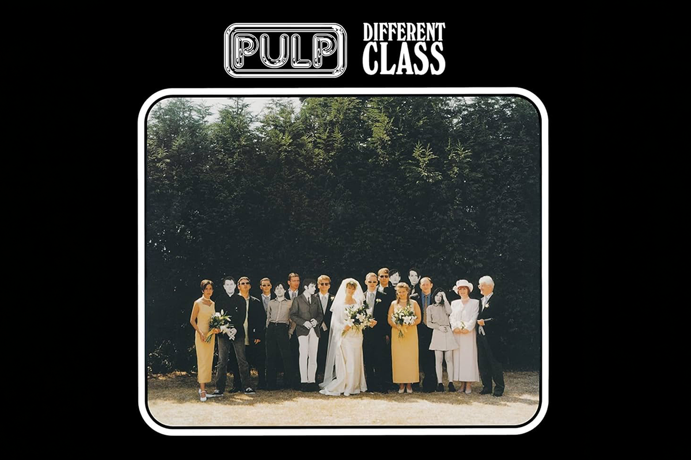
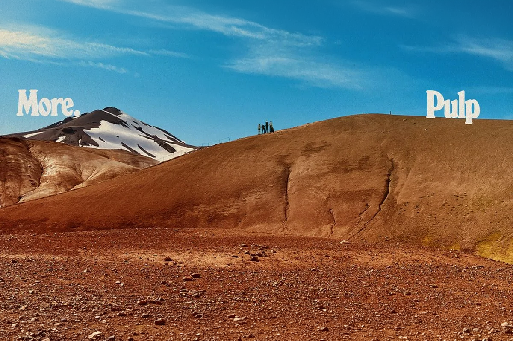

PULP: britpop para gente común
A días de su regreso a nuestro país, revisamos la grandeza de una de las bandas pilares del britpop
A días de su regreso a nuestro país, revisamos la grandeza de una de las bandas pilares del britpop

Si de britpop se trata, la discusión siempre se resume a la existencia de dos grupos: Oasis y Blur. Ambas bandas, que siempre mostraron una patente rivalidad en la década de los 90’s, no solo fueron unas de las más importantes de esos años, sino que también el rostro de un nuevo género musical que se tomó las listas radiales y que revivió de forma feroz la competencia entre qué artista vendía más discos.
Sin embargo, detrás de esa importante época en el pop/rock británico, y un poco más desde las sombras, había otros grupos que escapaban de esas pugnas por la popularidad. Estas agrupaciones ––y a pesar de que los ojos del público y la crítica solían estar fijos en el microcosmos Oasis-Blur–– se dedicaron a lanzar hits que, hasta el día de hoy, acompañan las playlists de los más nostálgicos.
Una de esas bandas fue Pulp, grupo que, para muchos, rescató lo mejor no solo del britpop, sino que también retrató perfectamente el contexto social de la Inglaterra de aquella época.

Si bien el britpop se destacaba por su estética, intrínsecamente asociada a lo que representaban Oasis y Blur, Pulp le dio una vuelta al nuevo género haciendo algo bastante sencillo: aterrizar el concepto.
Mientras que Oasis era un grupo que armaba himnos de estadio con una actitud más bien arrogante y con Blur caracterizándose por su estilo cubierto de un tinte irónico y “artsy”, Pulp apelaba a la cotidianidad, observar a la sociedad inglesa de los 90’s y plasmar ese sentimiento en canciones que oscilaban entre la entretención y la melancolía.
Clases sociales, deseos frustrados, trabajos de oficina, romanticismo sin maquillaje, todo esto era interpretado con letras dinámicas en la voz del inigualable Jarvis Cocker, uno de los frontman más icónicos e histriónicos de la música contemporánea.

A pesar de que la música de Pulp rompe con la barrera generacional (puntos para el britpop, honestamente), es Jarvis Cocker el que representa a Pulp. Es su figura la que se desprende de esta, una de las grandes bandas británicas de los años 90’s.
Jarvis Cocker, hasta el día de hoy, se presenta como un cantante honesto, estrafalario pero cercano, quitado de bulla en personalidad, pero brillante y teatral en presencia. Se construyó como una figura de paz en tiempos tumultuosos. Nunca intentó verse como un artista “cool”, sin embargo, al no buscar serlo, terminó construyendo a un icono carismático y sincero a pesar de su ––muchas veces extraña–– presencia.
Un visionario, Cocker creó letras que hasta el día de hoy resuenan en la audiencia y hacen que, décadas después, sigan sintiéndose cercanas. Bailar y llorar, explicar aquello que no siempre se puede decir, romantizar el desastre, eso representaba (y sigue representando) Pulp.

“Different Class” (1995) fue un álbum definitorio en la carrera de Pulp y un clásico absoluto del britpop.
En medio de uno de los años más importantes para la música de los 90, “Different Class” logró destacar incluso entre una generación de discos fundamentales. Mientras Blur y Oasis lanzaban algunos de sus trabajos más emblemáticos, artistas como Alice in Chains, Faith No More, PJ Harvey y Radiohead también publicaban discos que terminarían marcando la década. Aun así, el disco de Pulp consiguió posicionarse no solo como uno de los lanzamientos más relevantes de 1995, sino también como uno de los trabajos esenciales del britpop.
Con canciones como las reconocidísimas “Disco 2000” y “Common People”, pero también con otras joyas como “Bar Italia”, “Pencil Skirt”, “Sorted for E's & Wizz” y “Something Changed”, Pulp hizo de “Different Class” su caballo de batalla definitivo, a pesar de la publicación previa de sus otros trabajos musicales que, silenciosos, venían lanzándose desde la década de los 80.

Y es justamente esa honestidad incómoda la que hizo que Pulp lograra sobrevivir al paso del tiempo de una manera distinta a muchas otras bandas del britpop. Mientras varias quedaron atrapadas en la estética, en el exceso de confianza y la fama concedida en los locos años 90’s, Pulp continuó resonando gracias a canciones que hablaban de inseguridad, deseo, ansiedad social y aspiraciones de clase desde una mirada profundamente humana. Quizás por eso sus letras siguen sintiéndose tan actuales: porque detrás del humor, la teatralidad y el sarcasmo, siempre existió una banda interesada en retratar personas reales.
Y esa honestidad al retratar la realidad también hizo lo suyo en Chile, donde han mantenido una fanaticada estable a lo largo de las décadas.
Es justamente esa fanaticada la que se va a congregar el próximo 8 de junio en el Movistar Arena, día en el que Pulp vuelva a pisar el escenario nacional para presentar su más reciente álbum, “More” (2025), y obviamente también deslumbrar con sus clásicos de siempre.
¿Quién va?
 Cultura
CulturaSé que suena raro hablar de calor extremo mientras en Chile todos están buscando la parka más gruesa del clóset.
 Cultura
CulturaEl hecho de que estemos entrando al mes de julio no se puede creer. Pero lo que tampoco se puede creer es la cantidad de artistas que han…
 Cultura
CulturaCuando hablamos de trabajos clásicos de la música chilena, siempre se nombran los discos de Violeta Parra, Víctor Jara, Los Jaivas o…